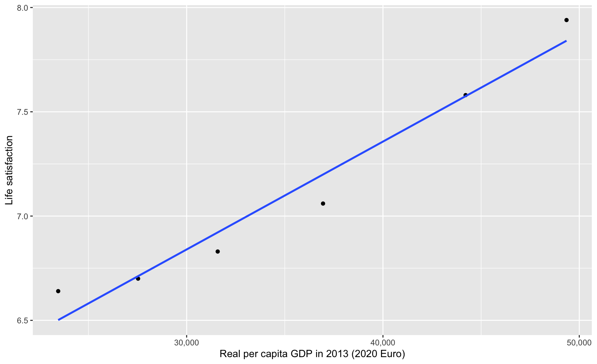
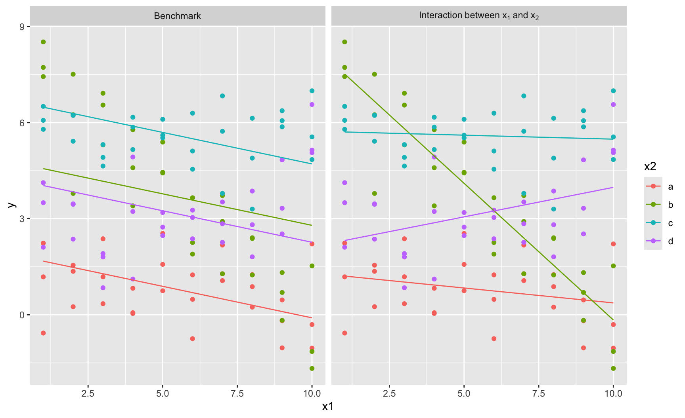
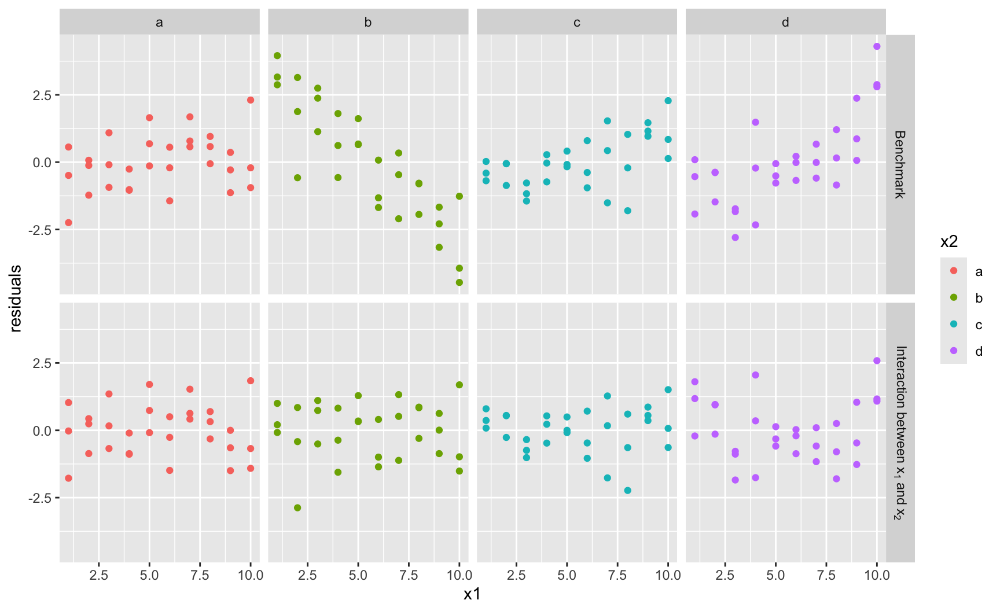

Introduction to programming for data analysis
Session 4 — Statistical Tests and Regressions
Disclaimer
\[ \definecolor{wongBlack}{RGB}{0,0,0} \definecolor{wongGold}{RGB}{230, 159, 0} \definecolor{wongLightBlue}{RGB}{86, 180, 233} \definecolor{wongGreen}{RGB}{0, 158, 115} \definecolor{wongYellow}{RGB}{240, 228, 66} \definecolor{wongBlue}{RGB}{0, 114, 178} \definecolor{wongOrange}{RGB}{213, 94, 0} \definecolor{wongPurple}{RGB}{204, 121, 167} \definecolor{colA}{RGB}{255, 221, 85} \definecolor{colB}{RGB}{148, 78, 223} \definecolor{colC}{RGB}{63, 179, 178} \definecolor{colGpeZero}{RGB}{127, 23, 14} \definecolor{colGpeUn}{RGB}{27, 149, 224} \]
The slides were adapted from those of Pierre Michel and Morgan Raux, both researchers at AMSE, who kindly shared their work.
This slide deck was made with Quarto and reveal.js, it is translated by Claude Sonnet 5 from a LaTex presentation previously made with beamer.
The 4 steps in any data analysis
- Finding data
- Cleaning data to combine several data sources
- Producing knowledge out from data (summary statistics, regression analysis summarised via tables and graphs)
- Interpreting the results (writing)
Statistical Hypothesis Tests
What is a statistical hypothesis test?
- A statistical hypothesis test is a statistical method for deciding between two hypotheses.
- It consists in rejecting (or not) a statistical hypothesis, called the null hypothesis.
- The statistic of the test is assumed to follow a specific distribution under the null hypothesis.
- Using historical data, an observed value for that statistic is computed.
- Then, a comparison with what we would expect if the null were true is made, based on the p-value:
- this comparison allows us to decide whether the difference is likely due to chance (in this case, the null is not rejected) or not.
Example: Student’s t-Test
A common hypothesis test is the Student’s t-Test, used to compare the means of two independent samples.
- Consider two random samples of observations from two distributions \(P_1\) and \(P_2\), with population means \(\mu_1\) and \(\mu_2\).
- Let \(\overline{X}_1\) and \(\overline{X}_2\) be the sample means (with observed values \(\overline{x}_1\) and \(\overline{x}_2\)).
- We test whether the observed difference \(\overline{x}_1 - \overline{x}_2\) is statistically distinguishable from 0 to infer whether \(\mu_1 = \mu_2\).
- In other words, the t-test is about testing the null hypothesis: \[\text{H}_0: \mu_1 = \mu_2\] using the observed difference \(\overline{x}_1 - \overline{x}_2\), while accounting for sample variability.
Example: Student’s t-Test
- The T-statistic is \[ T = \frac{\overline{X}_1 - \overline{X}_2}{\sqrt{\tfrac{s_1^2}{n_1} + \tfrac{s_2^2}{n_2}}}, \] where \(s_1^2, s_2^2\) are the sample variances and \(n_1, n_2\) the sample sizes.
- Under \(\text{H}_0\), \(T\) approximately follows a Student’s \(t\)-distribution with \(n-1\) degrees of freedom.
Example: Student’s t-Test
- The decision rule for the t-Test (two-sided test) is as follows:
- We reject \(\text{H}_0\) if \(|T| > t_{1-\alpha/2, \, \nu}\),
- where \(t_{1-\alpha/2, \, \nu}\) is the critical value of the \(t\)-distribution with \(\nu\) degrees of freedom,
- and where \(\alpha\) is the significance level (usually \(5\%\)).
- Equivalently, we reject \(\text{H}_0\) if the p-value \(< \alpha\)
- The p-value is the probability, under \(H_0\), of observing a test statistic at least as extreme as the one computed from the data, under the null: \[ p = \mathbb{P}\big[ \mid T_\nu \mid \geq \mid t_{\text{obs}}\mid \big] = 2 \times \mathbb{P}\big[ T_\nu \geq \mid t_{\text{obs}}\mid\big], \]
Application to GDP and life satisfaction
- We want to test whether the average GDP of ‘happy’ countries differs significantly from the average GDP of ‘unhappy’ countries (in 2018).
- We assume that:
- we have independent observations across countries,
- each group’s sampling distribution of the mean is approximately normal (if \(n>30\) for example, which is not the case here…).
Application to GDP and life satisfaction
Welch Two Sample t-test
data: happy$gdp and unhappy$gdp
t = 3.7208, df = 3.4399, p-value = 0.02669
alternative hypothesis: true difference in means is not equal to 0
95 percent confidence interval:
3249.704 28710.630
sample estimates:
mean of x mean of y
43502.17 27522.00 - What do you conclude?
Linear Regression
Linear Regression
- Recall that a linear regression is used to model the relationship between a dependent variable (usually denoted \(Y\)) and one or more explanatory variables (usually denoted by \(X_1, X_2, \ldots, X_p\)).
- Here, let us focus on the simple linear regression, with only one variable \(X\in \mathcal{X}\).
- We assume that the relationship between the dependent variable \(Y\) and the independent variable \(X\) is linear: \[ {\color{blue}Y} = a + b{\color{purple}X} \]
Example
- Going back to our GDP/Life satisfaction example, assume that the response variable \(Y\) is life satisfaction and the explanatory variable \(X\) is GDP.
- \(Y = a + bX\), where:
- \(a\) is the intercept (constant),
- \(b\) is the slope of the line.
- The values \(a\) and \(b\) are not known beforehand.
Example
ggplot(
data = tb |> filter(year == 2018),
mapping = aes(x = gdp, y = life_satisf)
) +
geom_point() +
geom_smooth(method = "lm", se = FALSE) +
labs(
x = "Real per capita GDP in 2013 (2020 Euro)",
y = "Life satisfaction"
) +
scale_x_continuous(
labels = scales::label_number(
suffix = "", scale = 1, big.mark = ","
)
)
The Regression Model
In the previous slide, we assumed the following model: \[ {\color{blue}Y_i} = {\color{green}\beta_0} + {\color{orange}\beta_1} {\color{purple}X_i} +\varepsilon_i, \] where
- \(i=1,\ldots,n\) represent the individual, where \(n\) is the total number of individuals,
- \(Y_i\) is the dependent variable,
- \(X_i\) is the independent variable,
- \(\beta_0\) is the intercept of the regression line,
- \(\beta_1\) is the slope of the regression line,
- \(\varepsilon_i\) is the error, where we assume \(\varepsilon \sim \mathcal{N}\big(0, \sigma^2\big)\).
The OLS Estimator
- The coefficients \(\beta_0\) and \(\beta_1\) can be estimated so as to minimize the sum of squared residuals (ordinary least squares (OLS) estimator): \[ (\hat{\beta}_0, \hat{\beta}_1)= \text{arg}\min_{\beta_0, \beta_1} \sum_{i=1}^{n}(Y_i - \beta_0 - \beta_1 X_i)^2 \]
- Graphically speaking, this corresponds to finding the values of \(\beta_0\) and \(\beta_1\) that will produce a line that is “as close as possible to the observations.”
- You saw in your regression class that in the case of simple linear regression, we have:
- \(\hat{\beta}_0 = \overline{Y}-\hat{\beta}_1 \overline{X}\)
- \(\hat{\beta}_1 = \frac{\sum_{i=1}^{n} (X_i - \overline{X})(Y_i - \overline{Y})}{\sum_{i=1}^{n}(X_i-\overline{X})^2}\)
Predicted Values and Residuals
- The predicted values using the OLS estimator, denoted \(\hat{y}_i\), are computed as: \[ \hat{y}_i =\hat{\beta}_0 + \hat{\beta}_1 X_i \]
- The distance between the observed value \(Y_i\) and the predicted value \(\hat{y}_i\) is named the residual, denoted \(\hat{\varepsilon}\): \[ \hat{\varepsilon}_i = Y_i - \hat{y}_i \]
Interactive Application A cool interactive online graphical application to understand the mechanisms of OLS can be accessed at the following URL: https://www.econometrics-with-r.org/SimpleRegression.html
A Linear Regression with R
- In
R, the OLS estimators of a linear model can be easily obtained, using thelm()function:- we provide the
lm()function with a formula of the relationship we want to model, - and a dataset.
- we provide the
- For example, in the dataset
sim1included in themodelrpackage, there are two variables,yandx. If we want to explain the variations ofyby the variations ofx, we write:
The Estimated Model
- When we print the object returned by
lm()in the console, we have:
Hence, the estimated model writes: \[ \hat{y}_i = 4.221 + 2.05 \times x_i \]
A Linear Regression with R: Estimates
- The coefficients of the model, estimated with OLS, can be accessed using the
coef()function.
A Linear Regression with R: Predictions
Instead of computing the predicted values using the extracted values of the coefficients and the matrix of explanatory variables, R offers the function predict():
1 2 3 4 5 6 7 8
6.272355 6.272355 6.272355 8.323888 8.323888 8.323888 10.375421 10.375421
9 10 11 12 13 14 15 16
10.375421 12.426954 12.426954 12.426954 14.478487 14.478487 14.478487 16.530020
17 18 19 20 21 22 23 24
16.530020 16.530020 18.581553 18.581553 18.581553 20.633087 20.633087 20.633087
25 26 27 28 29 30
22.684620 22.684620 22.684620 24.736153 24.736153 24.736153 A Linear Regression with R: Residuals
Similarly, for the residuals, R provides the residuals() function:
1 2 3 4 5 6
-2.072442018 1.238279125 -4.146882207 0.664969362 1.919217378 2.972935148
7 8 9 10 11 12
-3.019056466 0.129928252 0.136179642 0.007634878 -0.534352991 1.831009860
13 14 15 16 17 18
4.651562487 -2.740466108 1.546366596 -3.256043368 -0.574045413 0.364775796
19 20 21 22 23 24
1.504439222 -1.409703118 1.354755377 1.092815968 -2.242173633 1.842466099
25 26 27 28 29 30
4.092390235 0.120490168 -1.556314330 0.231946675 -1.389730610 -2.760952005 A Linear Regression with R: Summary
The summary() function applied to a linear regression model provides a lot of useful information on model fit:
Call:
lm(formula = y ~ x, data = modelr::sim1)
Residuals:
Min 1Q Median 3Q Max
-4.1469 -1.5197 0.1331 1.4670 4.6516
Coefficients:
Estimate Std. Error t value Pr(>|t|)
(Intercept) 4.2208 0.8688 4.858 4.09e-05 ***
x 2.0515 0.1400 14.651 1.17e-14 ***
---
Signif. codes: 0 '***' 0.001 '**' 0.01 '*' 0.05 '.' 0.1 ' ' 1
Residual standard error: 2.203 on 28 degrees of freedom
Multiple R-squared: 0.8846, Adjusted R-squared: 0.8805
F-statistic: 214.7 on 1 and 28 DF, p-value: 1.173e-14Export Your Regression Table
- Please do not make a screenshot of a regression table from your statistical software.
- In
R, there is a convenient package called{stargazer}which provides a function with the same name that allows you to export your summary table as a nice table in HTML or LaTeX format.- If you write your report using Google Docs, MS Word, OpenOffice, or Pages, export your table in HTML. You will then be able to copy/paste the table from your browser into your document (change the
typeargument).
- If you write your report using Google Docs, MS Word, OpenOffice, or Pages, export your table in HTML. You will then be able to copy/paste the table from your browser into your document (change the
Using type = "text" (as shown on the right-hand side) is convenient for looking at your results in the console. However, in a report, prefer another format.
===============================================
Dependent variable:
---------------------------
y
-----------------------------------------------
x 2.052***
(0.140)
Constant 4.221***
(0.869)
-----------------------------------------------
Observations 30
R2 0.885
Adjusted R2 0.880
Residual Std. Error 2.203 (df = 28)
F Statistic 214.660*** (df = 1; 28)
===============================================
Note: *p<0.1; **p<0.05; ***p<0.01Visualize Predicted Values
Predictions
Residuals
Quantile-Quantile Plot
- A QQ plot (quantile–quantile plot) in linear regression compares the sorted residuals from the model to the theoretical quantiles of a normal distribution.
- This provides a visualization to check the normality assumption of residuals.
- If the residuals are normally distributed, they will roughly lie on the bisector.
- If we observe an S-shape pattern, this points to a skewness of the distribution of the residuals.
- If we observe curved tails, it implies heavy or light tails for the distribution of the residuals.
- If we observe isolated endpoints, this is a hint that there may be outliers.
Residuals: Quantile-Quantile Plot
Residuals: Relationship with \(X\)?

Regression with categorical features
Reference Class
- A character variable included in a regression will be transformed into a
factorinR. - By default, the reference class is the first level in alphanumerical order.
- To choose a different reference category:
- specify the order manually with the
levelsargument of thefactor()function, - or use
fct_relevel()from the{forcats}package to directly set the reference level.
- specify the order manually with the
- The reference level determines the baseline against which other categories are compared in the regression.
Reference Class: Benchmark
- Benchmark situation: the variable
xis a character variable which contains the following unique values:"a","b","c","d". - The reference category will thus be
"a".
Changing the Reference Class
Using the factor() function or the fct_relevel() function from {forcats}:
Bivariate Graph for Residuals
Interaction Terms
Interaction in a Model
We may believe the effect of a variable (\(x_1\)) depends on the value of another (\(x_2\)).
Interaction in a Model
- Benchmark model without interactions: \[ y_i = \beta_0 + \beta_1 x_{1,i} + \beta_2 x_{2,i} + \varepsilon_i, \quad \varepsilon_i \sim \mathcal{N}(0, \sigma^2). \]
- To test whether the effect of \(x_1\) depends on the value of \(x_2\), we add an interaction term: \[ y_i = \gamma_0 + \gamma_1 x_{1,i} + \gamma_2 x_{2,i} + \gamma_3 (x_{1,i} \times x_{2,i}) + \varepsilon_i, \quad \varepsilon_i \sim \mathcal{N}(0, \sigma^2). \]
- With this specification, the marginal effect of \(x_1\) is \[ \frac{\partial y_i}{\partial x_{1,i}} = \gamma_1 + \gamma_3 x_{2,i}, \] Hence, the slope of \(x_1\) changes with \(x_2\).
Interaction in a Model
We will consider two cases:
- a continuous variable interacted with a categorical variable,
- a continuous variable interacted with a continuous variable.
Interaction Between Continuous and Categorical Variables
Call:
lm(formula = y ~ x1 + x2, data = sim3)
Coefficients:
(Intercept) x1 x2b x2c x2d
1.8717 -0.1967 2.8878 4.8057 2.3596
Call:
lm(formula = y ~ x1 * x2, data = sim3)
Coefficients:
(Intercept) x1 x2b x2c x2d x1:x2b
1.30124 -0.09302 7.06938 4.43090 0.83455 -0.76029
x1:x2c x1:x2d
0.06815 0.27728 Visualize the Slopes in a Graph
ggplot(
data = sim3 |>
modelr::gather_predictions(mod_bench, mod_interact) |>
mutate(
model = factor(
model,
levels = c("mod_bench", "mod_interact"),
labels = c("Benchmark", "Interaction~between~x[1]~and~x[2]"))
),
mapping = aes(x = x1, y = y, colour = x2)
) +
geom_point() +
geom_line(aes(y = pred)) +
facet_wrap(
~ model,
labeller = labeller(
model = label_parsed
)
)Visualize the Slopes in a Graph

A Quick Glance at the Residuals
ggplot(
data = sim3 |>
modelr::gather_residuals(mod_bench, mod_interact) |>
mutate(
model = factor(
model,
levels = c("mod_bench", "mod_interact"),
labels = c("Benchmark", "Interaction~between~x[1]~and~x[2]"))
),
mapping = aes(x = x1, y = resid, colour = x2)
) +
geom_point() +
facet_grid(
model ~ x2,
labeller = labeller(
model = label_parsed
)
) +
labs(y = "residuals")A Quick Glance at the Residuals

Interaction Between Two Continuous Variables
Interaction Between Two Continuous Variables
# A tibble: 600 × 6
model x1 x2 rep y pred
<chr> <dbl> <dbl> <int> <dbl> <dbl>
1 mod1 -1 -1 1 4.25 0.996
2 mod1 -1 -1 2 1.21 0.996
3 mod1 -1 -1 3 0.353 0.996
4 mod1 -1 -0.778 1 -0.0467 0.378
5 mod1 -1 -0.778 2 4.64 0.378
6 mod1 -1 -0.778 3 1.38 0.378
7 mod1 -1 -0.556 1 0.975 -0.240
8 mod1 -1 -0.556 2 2.50 -0.240
9 mod1 -1 -0.556 3 2.70 -0.240
10 mod1 -1 -0.333 1 0.558 -0.859
# ℹ 590 more rowsInteraction Between Two Continuous Variables
Interaction Between Two Continuous Variables

Non-Linear Terms in a Linear Regression Model
Non-Linear Terms
- The relationship with an explanatory variable and the response variable may be non-linear.
- Introducing transformed variables into the model allows us to take these non-linearities into account.
- log, squared value, power
- In an
Rformula, if the transformation involves one of the following signs, the transformation must appear inside theI()function when writing the formula:+,*,^,-.
Example
- For example, assume we want to fit the following model: \[ y_i = \beta_0 + \beta_1 x_i + \beta_2x_i^2 + \varepsilon_i, \quad \varepsilon_i \sim \mathcal{N}(0,1). \]
- The following formula will be used:
- Alternatively, one can use the
poly()function (polynomials):
Regression with Panel Data
Panel Data
- In session 1, we mentioned panel data.
- Recall that cross-sectional data contain observations that are collected at a single point in time across multiple units.
- In contrast, panel data contain observations for multiple units followed over two or more time periods.
- A panel dataset will be denoted as follows: \[\{ (\boldsymbol{X}_{it}, y_{it}) \}_{i=1,\dots,n;\; t=1,\dots,T},\] where \(i=1,\ldots n\) refers to individuals and \(t=1,\ldots\) refers to the time period.
Example
The dataset containing real per capita GDP merged with the dataset giving life satisfaction, both downloaded from Eurostat (see tutorial 1) contains annual values (from 2010 to 2023) for multiple countries (6).
# A tibble: 84 × 4
country year gdp life_satisf
<chr> <dbl> <dbl> <dbl>
1 FR 2010 32548. 6.72
2 IT 2010 26774. 6.59
3 DE 2010 38145. 7.17
4 ES 2010 24253. 6.67
5 NL 2010 42162. 7.94
6 PT 2010 19958. 6.42
7 FR 2011 33245. 7.13
8 IT 2011 27502. 6.45
9 DE 2011 39567. 7.32
10 ES 2011 24455. 6.93
# ℹ 74 more rowsPanel Data Setup
- We have a panel dataset: \(N=6\) countries observed over \(T=14\) years (even if it is not perfectly balanced).
- The variables:
- \(gdp_{it}\): per capita GDP,
- \(life_{it}\): life satisfaction (response variable).
- Our regression model of interest: \[ \text{life\_satisf}_{it} = \beta_0 + {\color{wongGreen}\beta_1} \text{gdp}_{it} + \varepsilon_{it}. \]
- How can we account for shocks common to all countries in the same year (e.g., financial crisis, pandemic)?
Why Time Fixed Effects?
- The events mentioned previously (global recessions, pandemics, or geopolitical crises) affect all countries simultaneously.
- Ignoring these can bias \(\color{wongGreen}\beta_1\) if GDP and these shocks are correlated.
- To tackle this issue, we add time dummies \({\color{wongOrange}\delta_t}\) to capture common year-specific effects.
Panel Regression with Time Fixed Effects
- Extended specification: \[ \text{life\_satisf}_{it} = \beta_0 + {\color{wongGreen}\beta_1} \text{gdp}_{it} + \sum_{t\in\mathcal{T}} {\color{wongOrange}\delta_t} D_t + u_{it}, \] where \(D_t\) is a dummy variable equal to 1 if year = \(t\), and \(\mathcal{T} = \{2013, 2018, 2021, 2022, 2023, 2024\}\).
- We interpret the coefficients as follows:
- \({\color{wongGreen}\beta_1}\): marginal effect of per capita GDP on life satisfaction, net of year-specific shocks.
- \(\color{wongOrange}\delta_t\): average shift in life satisfaction in year \(t\) relative to the baseline year.
Implementation in R: Pooled OLS
The FE model estimated with the lm() function:
Using the {plm} package:
With Country Fixed Effects
- So far, we controlled for time fixed effects \(\delta_t\) (global shocks common to all countries).
- But countries also differ in time-invariant characteristics, for example:
- culture, geography, history,
- institutions, long-run policies, etc.
- These may be correlated with per capita GDP and life satisfaction.
- Hence, to account for this, we can also control for country fixed effects \(\alpha_i\).
Two-Way Fixed Effects Model (1/2)
- The regression equation becomes: \[
\text{life\_satisf}_{it} = \beta_0 + {\color{wongGreen}\beta_1} \text{gdp}_{it} + {\color{wongGold}\alpha_i} + {\color{wongOrange}\delta_t} + \varepsilon_{it},
\]
- \(\color{wongGold}\alpha_i\): country-specific effects (to absorb unobserved, time-invariant differences across countries).
- \(\color{wongOrange}\delta_t\): time effects (to capture common shocks in a given year).
Two-Way Fixed Effects Model (2/2)
- \(\color{wongGreen}\beta_1\) measures the effect of GDP on life satisfaction within countries over time, net of:
- persistent cross-country differences (\(\color{wongGold}\alpha_i\)),
- global shocks or year-specific changes (\(\color{wongOrange}\delta_t\)).
- In other words:
- we compare each country to itself over time,
- while adjusting for events that affect all countries in the same year.
Implementation in R
With the lm() function:
With the plm() function:
Package for Estimations with Multiple Fixed-Effects
The package {fixest} seems nice:
- The homepage of the package: 🌐 fixest: Fast and user-friendly fixed-effects estimation
- A cool vignette for the package: 🌐 Fast Fixed-Effects Estimation: Short Introduction
Exercises
Practice with the third tutorial!

Introduction to programming for data analysis — Session 2